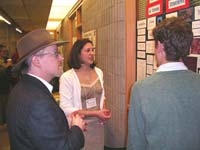
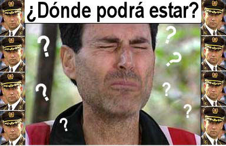

Chica de los rayos X apoyada con entusiasmo

¿Por qué no nos sorprende? Brian Josephson, el profesor de la universidad de Cambridge que ganó el Premio Nobel de Física en 1973, ha apoyado las afirmaciones de la “niña prodigio psíquica” rusa Natasha Demkina de que puede ver dentro de los cuerpos de la gente. Nos ocupamos de la señorita Demkina en http://www.sindioses.org/randi/randi20040206.html#natasha-natalia-natalya y de Josephson en varios lugares, como en http://www.randi.org/jr/01-26-2001.html [en inglés].
Josephson, un notable credófilo (véase http://forums.randi.org/showthread.php?s=&threadid=29051) naturalmente cree a la escolar rusa, que dice que usa visión de rayos X para diagnosticar problemas médicos. Ahora él afirma que un experimento para un documental televisivo próximo a emitirse, y que refuta las afirmaciones de Demkina, fue “arreglado” para asegurar que ella fallaría. Esas pruebas fueron diseñadas en parte por el periodista científico Andrew Skolnick, por Ray Hyman, profesor doctorado de psicología de la Universidad de Oregon en Eugene, y por el doctor Richard Wiseman, un profesor de psicología en la Universidad de Hertfordshire. Wiseman ha dicho que el ataque del profesor Josephson, que es un físico que no registra publicaciones sobre parapsicología, “no tiene mucho peso”, dado que fue publicado en su sitio web personal sin ningún proceso de verificación.
En la prueba, la señorita Demkina identificó correctamente las enfermedades de cuatro de siete pacientes, y diagnosticó mal tres. Se le informó con anticipación de las siete enfermedades posibles, y se exigía que las asignara correctamente: una prueba de “elección forzada”. Afirmó previamente que acertaría el 100% de las veces, pero estuvo de acuerdo con los investigadores en que tendría que obtener al menos cinco éxitos para pasar la prueba. El profesor Josephson parece ignorar que las pruebas científicas correctas requieren que el se acuerde de antemano el protocolo y luego se lo siga, como ocurrió con este; él prefiere reestructurar las reglas cuando la prueba falla en demostrar lo que él prefiere.
El “secreto” de una de los sujetos de prueba era el hecho de que le reemplazaron la cadera, y su forma de caminar algo extraña puede haber dado alguna pista de ello. Además, la gente de Demkina conversó con algunos de los sujetos antes de la prueba. Ambos factores debieron ser eliminados, diría yo. Uno no puede fabricar excusas luego de que se acuerda y realiza una prueba, sin embargo. Estos factores deben ser eliminados con anterioridad por los experimentadores. Presentar tales hechos como excusas sería seguir los métodos de Josephson, y eso no me parece aceptable.
Dijo Skolnick:
Las afirmaciones de la señorita Demkina son mucho más sorprendentes y revolucionarias las de [el descubridor de los rayos X] Roentgen. Si son ciertas, su impacto en la ciencia y la medicina sería mucho más grande. Desafortunadamente, los resultados de la prueba dan poca justificación para continuar estudiándolas. No encontramos evidencia de que la señorita Demkina pueda ver dentro de los cuerpos de la gente, a nivel celular o a cualquier otro.
Caray, nosotros ofrecimos evaluar a esta chica, pero a ella no le interesó. El éxito con nosotros le hubiera significado avanzar hacia el premio del millón de dólares, que ingenuamente creo que es incluso mejor que el apoyo de un ingenuo premiado con el Nobel.
Una reseña de “Detective Psíquico”

El lector Mike Lilley nos presenta una excelente desglose y análisis de un programa popular de televisión:
Su discusión reciente sobre los psíquicos televisivos me impulsó a comentar sobre el episodio de esta semana de Court TV de “Detective Psíquico”.
En el programa de esta semana (que vi ante la insistencia de mi mujer para darle el gusto), los talentos psíquicos de Laurie McQuary fueron exhibidas en la investigación de homicidio de la víctima fallecida, la modelo fotográfica de Los Ángeles Linda Sobek. El único problema es que la psíquica no ayudó en absoluto a encontrar el cuerpo, no ayudó al hallar el sitio del homicidio, no ayudó con los policías, y tuvo un valor cero en la investigación. En lugar de ello, el propio asesino condujo a la policía al cuerpo, luego de ser atrapado por los policías utilizando procesos investigativos normales no relacionados con ningún “psíquico”.
Entonces, ¿cómo se las arregla el programa para convertir este fracaso total para darle crédito a la psíquica McQuary por “ayudar” a encontrar el cuerpo y resolver el crimen? Simple. En el cercano Parque Nacional de Los Ángeles (donde se arroja con frecuencia a muchas víctimas de homicidio que han desaparecido), la psíquica tuvo la “sensación de muerte” en un conveniente barranco cerca de una curva de un camino remoto. No era el sitio del homicidio, que ocurrió en el desierto. No estaba ni siquiera cerca de donde se halló el cuerpo. No tenía conexión con este crimen. Pero ¡algún otor cuerpo había sido arrojado en el área hacía años! La psíquica explicó más tarde que lo que estaba sintiendo eran las vibraciones de la “antigua muerte” en lugar de las de la “reciente”. Como todos sabemos, las vibraciones de la “muerte antigua” y las de la “muerte reciente” a veces pueden ser muy difíciles de distinguir. Estoy seguro de que años de historias sobre cuerpos perdidosque se encontraban en la región montañosa en la que se hallan esos caminos no tuvieron nada que ver con ninguna especulación psíquica sobre la muerte que “sintió” McQuary.
A pesar de que la psíquica McQuary no aportó valor alguno a esta investigación por homicidio ¡el programa la elogió por sus sorprendentes contribuciones a este caso! Algo bastante sorprendente, es cierto, pero no por las razones que pretendían los productores.
A propósito, cuando ocurrió este crimen ya se había revelado en los periódicos y en los relatos televisivos que la modelo víctima desapareció durante el momento exacto en que su agenda indicaba que iba a estar en una larga sesión fotográfica nocturna en el desierto con un fotógrafo nuevo en particular que ya estaba siendo investigado. Entonces esta psíquica, McQuary, ¡predijo sorprendentemente que el asesino de esta modelo “tenía algo que ver con la fotografía”! Otro acierto sorprendente e impresionante. Este tipo de cosas es normal semana tras semana en el programa. Hasta los mejores esfuerzos del productor en editar para resaltar los “sorprendentes e impresionantes poderes” siguen mostrando los esfuerzos “psíquicos” como desesperadamente patéticos.
Esta es la descripción del programa del sitio web de Court TV, bajo el título “Misterio de Hollywood”:
Cuando la modelo de Los Ángeles Linda Sobek desaparece, la única pista es su auto abandonado hallado en un suburbio cercano. La policía empieza a peinar el área local, pero los amigos de Sobek creen que están siguiendo una pista equivocada y toman el asunto en sus propias manos. Traen a la psíquica Laurie McQuary. Ella está de acuerdo en que la búsqueda se enfoca en el área equivocada, y busca en el Parque Nacional de Los Ángeles. Sin recursos oficiales con los que trabajar, ¿cómo encontrará McQuary a la mujer en un parque del tamaño de Rhode Island?
A propósito, la respuesta final del programa a esta última pregunta no es
“No lo logra”, o
“No pudo”, o
“¡Resulta que no tenía idea!”, o
“No fue de ninguna ayuda. El propio asesino condujo a los investigadores hasta el cuerpo”.
En lugar de ello, ¡la respuesta que obtenemos de las conclusiones del programa implican que la sorprendente psíquica McQuary fue imprescindible para ayudar a encontrar el cuerpo y resolver el crimen! Los poderes sorprendentes están presentes aquí también… de parte de los productores del programa. ¡Han usado sus mejores poderes psíquicos para deducir que su audiencia televisiva es tan tonta como una pila de rocas en el Parque Nacional de Los Ángeles!
Mike, como bien sabes, una falla tan abismal no afectará un ápice la carrera de esta “psíquica”. McQuary seguirá siendo consultada por los ingenuos, se le pagará por sus conjeturas, y será igual de exacta y útil que en este caso. Su sitio web dice que ha sido votada como “La mejor de Portland”, y ha estado en esto ya por veinte años. Impresionante…
La Universidad de Illinois ofrece Qi Gong
He dado conferencias en este centro de enseñanza en el pasado, pero un estudiante parece pensar que algunas personas no estaban escuchando. Escribe:
Mi nombre es Michael Jaramillo, un estudiante universitario y desde hace poco un orgulloso miembro de la JREF que porta su tarjeta. Ahora imagine mi sorpresa al ver que mi universidad está ofreciendo una clase de kinesiología en algo llamado Qi Gong. Esta es la universidad de Illinois en Urbana- Champaign, una institución altamente respetada. Hace poco recibí un email con este mensaje:
PRIMAVERA DE 2005
La clase “Qi Gong para el manejo del estrés”, CRN 42977, se dará entre el 29 de marzo y el 4 de mayo, de 18 a 20, martes, miércoles y jueves. Sala 310 Salón Freer. Instructor: Dr. Weimo Zhu.
Descripción del curso:
Los antiguos de China concluyeron hace miles de años que el Qi (Fuerza de Vida, o Energía Vital) es la esencia d etodas las cosas en la tierra, incluyendo la salud. “Gong”, en chino, significa práctica o entrenamiento. Los movimientos sutiles, las posturas fáciles y las técnicas simples de meditación de este poderoso método de sanación producen un flujo de energía balanceado, dando como resultado salud óptima del cuerpo y la mente. El Qi-gong ha demostrado ser una forma efectiva de reducir el estrés. A diferencia de otras formas de ejercicio, Qi Gong no requiere ningún equipo, vestimenta o espacio especiales de modo que es un ejercicio que puede hacerse prácticamente en cualquier momento en cualquier lugar. Un maestro de Qi-gong de China será expositor invitado en la clase.

¡Un momento! El señor Jaramillo tenía razón de que se le dispararan las alarmas con este anuncio, pero examinémoslo más. Escribe que esta es una clase de “kinesiología”. Creo que está conectando (equivocadamente) esta disciplina muy legítima con la “kinesiología aplicada”, un procedimiento que sí es pseudomédico que los ignorantes usan para el diagnóstico. La kinesiología en sí es una herramienta valiosa que se usa para propósitos médicos y también se aplica a la danza. Es “el estudio de la anatomía y fisiología del movimiento del cuerpo, especialmente en relación con la educación o terapia físicas”, de acuerdo con el diccionario Webster. El doctor Weimo Zhu es un Profesor Asociado titular en Urbana-Champaign, un experto reconocido en la disciplina. Pero leamos del señor Jaramillo por qué específicamente está alarmado:
Ahora bien, entiendo la reducción del estrés al igual que todas las técnicas estéticas y calmas que cualquiera puede aplicar para sentirse mejor. Pero ¿por qué una universidad ofrece un curso sobre ello y por qué si quieren que alguien enseñe reducción de estrés lo hacen con un programa que promueve los disparates obvios señalados más arriba, como la “fuerza vital”? Sólo porque los chinos sacaron una conclusión hace miles de años antes de los rápidos avances de la ciencia ¿eso la vuelve cierta? No lo creo. También busqué Qi Gong en Aetna Online y dicen que se han hecho pocos estudios científicos sobre la efectividad y seguridad del Qi Gong, de modo que parece irresponsable que una institución de investigación tenga un curso en ello. Quiero señalar esta opinión a la universidad, pero primero me interesa saber qué tiene que decir la JREF sobre el asunto.
¡Ah, aquí está! El hombre tenía razón en enojarse por las referencias de la descripción del curso a la “Fuerza Vital”, la “Energía Vital” y el “flujo balanceado de la energía”, todas expresiones New Age que no se refieren en modo alguno a la realidad. Pero no podemos asumir que el profesor Zhu escribió o siquiera conocía el texto usado, y tampoco sabemos que él sea el “maestro de Qi- Gong” al que se refiere. El concepto mismo de Qi-Gong es una vieja idea difusa que generalmente cubre los interrogantes y problemas de explicar los procesos de la vida, y por supuesto permite interpretaciones generosas de casi todo, desde el clima a la indigestión. ¡Sugiero que debemos hacer algunas preguntas más sobre todo esto antes de enojarnos demasiado!
De hecho me suena (viendo las referencias a la reducción de estrés y al ejercicio) como si este curso que se ofrece pudiera haberse descrito bastante mal, y pudiera ser más sobre Tai Chi (más correctamente, Tai Chi Chuan), una forma antigua de ejercicio suave y gracioso que es practicado por la población china de todas las edades; cada mañana durante mi última estadía en China, vi un parque lleno de felices ciudadanos descendiendo y deslizándose hacia la salud y la flexibilidad gracias a esta interesante disciplina. Tengo confianza en que no hay nada de malo en ello.
Nuestro estudiante siguió con otro asunto, éste perfectamente capaz de indignar profundamente a cualquier persona pensante:
También me remitieron un mensaje de algún lugar fuera de la universidad. Es sobre talismanes místicos, aunque este lugar quiere darme uno gratis (aunque dudo que la cosa termine allí). Sin embargo me ahorré los dos dólares de gastos de envío. De nuevo sacan a colación a los chinos. Supongo que eso hace que más gente compre talismanes. ¿Soy yo o hay algún flujo de superstición asiática hacia Estados Unidos en estos días? Todavía no entiendo cómo se supone que funcione un talismán, aunque sé que no lo hacen. Sólo porque tiene algún símbolo grabado, ¿uno va a recibir? Y pur supuesto cualquiera que no reciba no deseó con la suficiente fuerza, o no enfocó la energía suficiente en ello.
Quisiera agradecer a la JREF por proporcionar información útil y combatir la pseudociencia a cada paso. Me gustaría agradecer al señor James Randi por sus incansables esfuerzos. Es bueno saber que alguien pelea la batalla por la verdad.
Gracias Michael, pero por favor examina más profundamente los temas que parecen demasiado buenos para ser ciertos, o quizá no parezcan genuinos porque usan jerga o apelan a la superstición. Ten en cuenta: todo el mundo les debe gratitud a los descubrimientos de los chinos en filosofía, ciencia y cultura. El hecho de que se hayan equivocado a lo largo del camino en relación con asuntos tales como el “qi” o los “meridianos” sólo refleja los errores equivalentes como la teoría de los “humores”, las sangrías y la alquimia que los antiguos sabios occidentales del medioevo adoptaron y enseñaron. ¡Me complace mucho que consultaras con nosotros antes de atacar al profesor Zhu en la Universidad! Veamos qué se ofrece realmente allí; ¡el Qi Gong puede ser sólo una etiqueta usada para hacer más atractivo el curso!
Geller ofrece quitar una maldición
Luciano Testa, un lector de Argentina que ahora vive en Galway, Irlanda, me envía una nota que agradecemos, el tipo de comentario que hace que trabajar en la JREF valga la pena y nos impulsa más a seguir la batalla contra la cháchara:
Me gustaría agradecerle por su trabajo, me ayudó a eludir muchos disparates y a evitar caer en las garras de la homeopatía. También me convertí en escéptico desde mi primer contacto con su trabajo y, aunque me ha creado algunos problemas, me ha transformado en una persona más crítica y racional. Me siento mejor, trabajo mejor y decido mejor lo que es bueno para mí.
Claro, ¡también me he hecho de algunos enemigos! Pero es bueno al menos mostrarle a la gente otro punto de vista.

Luciano luego comenta sobre la noticia de que el concejo de la ciudad de Carlisle, una ciudad del norte de Inglaterra, decidió rechazar una moción para destruir una roca de 16 toneladas inscrita con una maldición de 1.069 palabras y exhibida en uno de los museos de la ciudad. La “piedra maldita” fue culpada de la “mala suerte” reciente de Carlisle manifestada en forma de inundaciones, fiebre aftosa, humillantes derrotas deportivas y desempleo. El “psíquico” Uri Geller incluso ofreció noblemente “salvar” a Carlisle exorcizando la maldición de la piedra, retirándola y secuestrándola en su “jardín de curación”. Claro.
El líder del concejo de la ciudad, Mike Mitchelson, luego de rechazar la generosa oferta de Geller de adoptar la piedra, mostró continuamente una actitud sensata y racional sobre el tema, diciendo que no había razón lógica alguna para poder culpar a la piedra por los sucesos desafortunados. Estoy de acuerdo: las inundaciones son el resultado de fenómenos meteorológicos, las enfermedades del ganado tienen explicación biológica, algunos atletas se desempeñan mejor que otros y el desempleo no tiene nada que ver con rocas enormes… salvo durante proyectos de construcción. Dijo Mitchelson: “Vivimos en una era moderna. La gente de Carlisle es sana y racional y no sigue viviendo en tiempos medievales”. Señaló que muchas otras áreas de Gran Bretaña han experimentado tanto aftosa como inundaciones.
¡Reelijan a Mike Mitchelson, gente de Carlisle!
Comenta Luciano sobre esta historia:
Parece que finalmente alguien respondió con las palabras justas semejante cantidad de disparate. También es sorprendente cómo este tipo, el Doblacucharas, insiste en las mismas cosas una y otra vez poniéndose en una situación ridícula, aunque parece que eso no le importa.
Admisión de errores
La lectora Karen Davis, junto con varias otras docenas, me corrigieron sobre mi afirmación sobre los gatos rojos. Escribí que todos los gatos rojos (en el Reino Unido se los llama gatos “jengibre”) eran machos. Ella escribió, en parte:
Hay más gatos rojos que gatas rojas; también hay más gatas que gatos negros. Pero todos los gatos moteados son hembras, salvo el caso raro de un macho que es XXY, un suceso más frecuente en gatos, creo, que en la gente.
Acepto la corrección, y debo agregar que tuve una hermosa gata, Alice, que era totalmente negra excepto por un pequeño punto blanco. Me alegra notar, sin embargo, que tenái razón cuando afirmé que todos los gatos moteados eran hembras. Bueno, casi todos…
También me informaron algunas docenas más de lectores que la medida del Cúbito Perdido a la que llegué la semana pasada ¡estaba mal por un orden de magnitud! Mea culpa. Mi cifra de 0,374 debió haber sido 3,74… ¿pero quién está contando? Y parece que el Cúbito Perdido es 3,74 hercios… una frecuencia en lugar de una longitud. ¡Qué confusa puede ser la pseudociencia! ¡Ah, pero deberían haber visto la alegría con la que una manada de detractores muy oscuros se aferraron de este penoso error matemático que cometí! Parece que cuando cometo un error así, invalida todas mis opiniones y decisiones: ahora, Dios existe, Geller es verdadero y Sylvia Browne fue reivindicada… Todo porque me equivoqué en un decimal. Diantres.
Anuncio
¡Anunciamos LABRats!
Si tiene adolescentes o preadolescentes en su vida que disfrutan la ciencia, tiene que visitar LABRats, un nuevo club de ciencia on-line GRATIS creado por mi amigo y compañero de MacArthur, el doctor Shawn Carlson. Shawn fundó la Sociedad de Científicos Aficionados en 1994 y escribió para Scientific American durante seis años. LABRats es su intento más reciente de llevar la luz del empirismo al mundo de los analfabetos científicos.
El doctor Carlson aparece aquí con dos de sus estudiantes.
Los miembros de LABRats ven una lección práctica semanal sobre la ciencia llena de “los trucos, consejos, preguntas y citas más interesantes que conozco”, dice Shawn, “más concursos y premios y descuentos sobre fantásticas cosas de ciencia, sin mencionar muchos útiles principios que los científicos verdaderos usan cada día para hacer los descubrimientos que cambian nuestro mundo. Quédense tranquilos, el escepticismo y el pensamiento racional son esenciales en su curso. De hecho, LABRats bien podría introducir al pensamiento escético a cientos de chicos que en verdad no lo habrían aprendido en otra parte. Cientos de familias ya están anotadas. Puede anotar a sus hijos en http://www.scifair.org.
LABRats es sólo el primer paso hacia una estimulante visión nueva para reinventar la educación científica en los Estados Unidos. Si quiere saber más sobre eso, vaya a la página inicial de la Sociedad de Científicos Aficionados (http://www.sas.org) y haga clic en “LABRats”.
Esos sentidos extraños
El lector Sheldon W. Helms nos remite a http://www.wired.com/news/medtech/0,1286,66770,00.html?tw=wn_story_mailer para leer un interesante artículo sobre la sinestesia, la mala interpretación de los datos sensoriales en la cual, por ejemplo, uno puede “oler” colores y “gustar” temperaturas debido al intercambio involuntario de canales, por así decirlo. Él nos da esta cita oportuna:
La investigación sobre la sinestesia ofrece una explicación que ha sido descrito por los psíquicos.
Muchos autoproclamados psíquicos dicen que pueden detectar el aura de una persona, descrita con frecuencia como un campo de energía colorido. Pero Jamie Ward, directora del Grupo de Investigación de la Sinestesia, dicen que algunas personas pueden experimentar colores en respuesta a la gente que conocen, una condición llamada sinestesia emoción-color.
“La capacidad de alguna gente de ver las auras de otros ha tenido un papel importante en el folklore y el misticismo a lo largo de las eras”, dijo Ward. “En lugar de asumir que la gente emite auras o cambios de energía que sólo pueden detectar cámaras arregladas o videntes entrenados, sólo necesitamos asumir que está ocurriendo el fenómeno de la sinestesia”.
Uno se pregunta
El lector Brian Miller encuentra un conflicto sobre una cita del papa Juan Pablo II de su intento de asesinato en 1981:
Todo fue un testimonio de la gracia divina. Mehmet Ali Agca [el que disparó] sabía disparar, y ciertamente disparó a matar. Aún así fue como si alguien guiara e desviara esa bala…
—Juan Pablo II
Hace notar Brian:
Así que cierto ALGUIEN desvió la bala lejos de errar o casi errar y directamente en el estómago e intestino superior del pontífice. Imagínese cómo intervendría Él cuando alguien no Le cayera bien. La lógica es infalible. Y de verdad funciona de maneras misteriosas.
El próximo artículo también cuestiona la calidad de la evidencia sobre asuntos sagrados…
Estándares dobles
Como todos sabemos bien, la novela superventas “El Código Da Vinci” de Dan Brown ha convertido a la Biblia en un nuevo culto; la gente no sólo decide creer que son hechos (como otros hicieron no hace mucho con “La Novena Revelación”, de James Redfield) sino que se están abalanzando para unirse a recorridos turísticos mencionados en el libro, parándose con reverencia donde el libro les dice que María Magdalena y Jesucristo vivieron juntos como marido y mujer. Bueno, ahora la Iglesia Católica Romana ha hablado contra lo que afirman ser “mentiras vergonzosas e infundadas” en el libro. ¿Quién lo iba a saber?
Tarcisio Bertone, Arzobispo de Genoa, ahora dice:
Me sorprende y me preocupa que tanta gente crea estas mentiras. El libro está en todas partes. Hay un riesgo muy real de que mucha gente que lo lea crea que las fábulas que contiene son ciertas.
El cardenal, segundo del Cardinal Joseph Ratzinger, quien es titular de la Congregación para la Doctrina de la Fe, el hombre conocido como “El justiciero del Papa”, parece haber perdido algo de vista aquí, en mi opinión, y en la opinión de varios lectores que se comunicaron conmigo por ello. Él no ve conflicto alguno en el hecho de que un libro mucho más popular (también escrito con un trasfondo de personajes y lugares históricos reales) ha atraído igualmente a un enorme número de personas que han elegido aceptar y adoptar la convicción de que sus contenidos no son fábulas, sino hechos. Se llaman cristianos, y el libro es la Biblia.
Cardenal, ¿este es algún tipo de pedido de consideración especial, o también nos permitirá tener una igual oportunidad para examinar sus afirmaciones?
Altibajos para NPR y PBS
El lector Mark LaBash, doctor en farmacia de Scottsdale, Arizona, escribe:
En un tiempo hace muchos años usted y la gente como Carl Sagan me convenció indirectamente de iniciar una gesta para probar científicamente mi “sistema de creencias”. Los admiré a todos por su conocimiento científico. Ahora, luego de recibir mi doctorado en un campo muy riguroso de medicina basada en la evidencia, entiendo que usted quería que “comprendiera” y no tuviera que “creer”.
Últimamente han estado pasándoles muchas cosas terribles a la razón y la ciencia. Como yo lo veo, hay una batalla que se está librando entre dos visiones del mundo; una es científica y juzga las cosas según sus méritos y está abierta al cambio. La otra visión del mundo se basa en un sistema de creencias que no puede cambiar independientemente de cuánta evidencia se le presente.
La ciencia es el proceso de hallar la verdad por medio de la recolección de evidencias, el análisis y, lo más importante, la disposición para cambiar la hipótesis para que coincida con la evidencia. Los sistemas de creencias usan el proceso de aceptar algo como verdad con poca o ninguna evidencia y la disposición para cambiar la evidencia o alterar los datos para adaptarse a la hipótesis. Nunca se permite que los sistemas de creencias cambien la hipótesis sin importar cuánta evidencia se presente.
Temo que nuestra nación ignore de nuevo la evidencia científica y continúe por el camino de menor resistencia. La evidencia es difícil de analizar y requiere mucha educación y trabajo. Es mucho más fácil simplemente creer. La voluntad de admitir que se ha cometido un error en la hipótesis es una de las características más importantes de la ciencia y algo que los sistemas de creencias no tienen.
Hoy me azoró escuchar en la Radio Pública Nacional (NPR) que Diane Rehm estaba entrevistando a un psíquico. Eso le daba validez a una tendencia horrible de nuestra sociedad de hoy.
Este es el email que le envié a su programa. Se titulaba “Ayudando a la desaparición de la razón”.
En relación con el programa de hoy con Terry Iacuzzo, autoproclamado psíquico.
Soy un fan suyo desde hace mucho tiempo y estoy muy desilusionado de que haya descendido an nivel de “infoentretenimiento a la Fox vendiendo su alma”. Esto no son noticias, ciencia, ni arte. ¡Es un intento patético de legitimar un sistema de creencias que no tiene evidencia empírica alguna! Todos los experimentos científicos independientes para verificar la validez de cualquiera de sus afirmaciones ha resultado en la prueba de que sufren de autoengaños. Voltaire fue famoso por decir “Los que pueden hacernos creer absurdos pueden hacernos cometer atrocidades”.
Ahora le digo a NPR, basar su vida es un sistema de creencias autoengañoso es un ultraje pero difundirlo es una atrocidad. Para absolverlo de esto, según mi punto de vista, tendría que tener un programa de continuación con alguien que esté alineado con la filosofía de Carl Sagan, Isaac Asimov, Philip Klass, Paul Kurtz, Ray Hyman, James Randi, Martin Gardner o Sidney Hook. O por favor póngase en contacto con el Comité para la Investigación Científica de las Afirmaciones sobre lo Paranormal en http://www.csicop.org/about/contact.html.
¡Gracias, James Randi! Ahora soy un activista con muchos grupos que ayudan a mantener encendida la vela de la razón.
Mark, también estoy muy sorprendido de esta acción de Diane Rehm, a quien admiro mucho por su percepción y su manejo de una variedad tan amplia de temas y personalidades en su excelente programa de la NPR. Parece que esta aceptación acrítica de lo paranormal es un paso más allá de la experiencia y juicio racional de la señora Rehm. Una lástima, porque su amplia audiencia la respeta mucho. El negocio de los “psíquicos” florecerá y los ingenuos gastarán mucho dinero, gracias al reconocimiento de NPR.
El lector Marquis Dufek tiene una queja válida sobre las campañas de PBS (televisión pública estadounidense) para obtener fondos:
Opino que PBS es, por lo general, uno de los mejores generadores de programas sobre ciencia y política. Hasta que la semana próxima venga el momento de pedir dinero, quiero decir. La última vez que se pidieron fondos aquí en Nuevo México apareció Deepak Chopra recorriendo el estado con su bazofia por medio de las misteriosas “energías universales del espectro electromagnético”. Me indigna de muchas formas pero principalmente porque asume que, para obtener fondo, PBS debe bajar sus estándares por una semana o algo así. Quizá no hay suficiente gente que pida durante los programas como Nova, la cual, durante esta época de solicitud, volvió a pasar “El Universo Elegante”, una de mis producciones favoritas de Nova de todos los tiempos. Pero luego vino Deepak con el habitual disparate “energético”. Ni siquiera pude verlo más de quince minutos antes de deprimirme desesperadamente. Para empeorar las cosas, era una repetición. Supongo que, como no es ciencia, la información nunca cambia así que no hay razón para actualizar la charlatanería.
Como sea, me pareció que esto representaba una maniobra del tipo “dos pasos adelante, un paso atrás” por parte de PBS. Proporcionar información interesante y educativa por un lado y luego difundir ideas que estarían más agusto en la Edad Oscura que en 2005, por el otro lado.
Pague o no las cuentas, en verdad no me gusta la idea de PBS difundiendo desinformación. ¿Estos farsantes no podrían emitir su basura sólo en la frecuencia misteriosa a la que afirman estar sintonizados?
Marquis, mi difusora local de PBS ha superado su estándar habitual de pseudomedicina presentando a una tal doctora Christiane Northrup para impulsar sus ansias de fondos. Me llevó menos de 30 segundos descubrir la naturaleza estafatoria de su ofrecimiento. Northrup promociona su libro “La sabiduría madre- hija” y un “Kit de la herencia” como regalos a los que se unan a PBS a un costo de US$ 275 al año. En su aparición por pantalla para PBS, la doctora Northrup contó de una hija doliente que encontró monedas en varios lugares en torno a la casa luego de que su madre murió, y consideró que esos eran “mensajes” de los fallecidos; ¡la doctora Northrup se mostró de acuerdo con que esto era así! Ella dijo que ya que el “ADN mitocondrial” “se remonta al ancestro antiguo de todas las mujeres” humanas, “nuestras madres siempre, siempre están con nosotros”. A los futuros suscriptores se les aseguró que en este momento “hay espacio para que todos” contribuyan… como si esta oportunidad de donar dinero fuera a cerrarse. Sólo puedo pensar en “¡Pero espere, hay más!” y “Si llama en los próximos cinco minutos…” como paralelos de una buhonería tan evidente. Se mostró un video en el cual las mujeres que escuchaban a Northrup lloraban incontrolablemente ante sus comentarios sobre “el proceso de moverse hacia la vida no física” (en otras palabras, morir) y la “emoción”, definida por esta sabia como “energía en movimiento”. Hablando con la presentadora del programa, igualmente fascinada y efusiva, que habló de la muerte de su propia madre, la doctora Northrup le aseguró que su madre aún “quiere que [ella] sea feliz”.

Northrup es la autora de “Empezando con la astrología médica”, un extracto de su publicación periódica “Sabiduría de la salud para mujeres”, ¡en la cual ella apoya incondicionalmente el uso de la astrología para diagnosticar y tratar las enfermedades de las mujeres! ¡Sólo eche una mirada a este cuadro para ver cuán absurdo es! Es increíble que la red de televisión PBS pueda permitir a esta pseudomédica infectar a sus televidentes, que confían en lo que aparece en este respetado cnaal.
Lo que tuvimos aquí en la pseudociencia actualmente presentada en PBS fue para regodearse al temor de la muerte, la pérdida de una madre, los problemas de trabajo de parto y la menopausia y cuestiones de “recuperar el control de su vida”. Era medieval en su contenido, de sabor mitológico y enfoque degradante, en mi opinión. PBS ha superado sus marcas anteriores en satisfacción desvergonzada de los deseos de su audiencia para obtener donaciones.
Más inquietante aún es que PBS (local o nacional) sencillamente no responde a las críticas a este proceso. Sus Torres de Marfil están atestadas, fuertemente cerradas, y bastante silenciosas. Esperaríamos más responsabilidad de ellos.
El lector Ted Canova de Tallahassee, Florida, resume bastante bien esta situación:
Envié esta carta anoche a WFSU luego de ver unos pocos minutos (fue todo lo que pude soportar sin que mi presión sanguínea aumentara peligrosamente) de un programa de recolección de fondos con Gary Null [vea http://www.randi.org/jr/070204another.html] en PBS. No espero una respuesta, ya que no recibi´ninguna cuando escribí luego de la última de tales presentaciones. Realmente me enfurece que PBS, pensada originalmente para beneficiar al público, ahora puede estar contribuyendo a que algunos de ellos termine lastimado, financiera o físicamente. ¿Cuánto tiempo pasará hasta que empiecen a vender trozos de cuerda roja? Aquí está mi carta:
PBS y WFSU tienen una responsabilidad con sus televidentes y su comunidad. Mucha gente aceptará algo sobre lo que normalmente podrían ser escépticos si lo ven en PBS. Desde hace ya varios años, la red ha estado usando una variedad de personajes promocionando pseudociencia y otras ideas absurdas, como los ángeles de la guarda, para obtener fondos. Algunos de ellos son fraudes y algunos se engañan a sí mismos y realmente creen el disparate que están vendiendo. Gary Null es uno de ellos, aunque no arriesgaré deducir de qué tipo. Hay gente por ahí que está desesperada, que puede evitar la ayuda verdadera que necesitan porque fue convencido por uno de esos farsantes. Pensé que nunca vería el día en que PBS descendería tan bajo. Ha pasado de promover el conocimiento y la educación a contribuir con toda probabilidad a auqe algunos de sus televidentes derrochen su dinero, y en algunos casos incluso terminen dañados por esperar demasiado para obtener verdadera ayuda o evitarla completamente.
¿Los que están a cargo de la emisora eon estúpidos, irresponsables, o sólo ven los signos de dólar de las contribuciones bailando frente a sus ojos? Sospecho lo último. Yo presencié la primera puesta en el aire de PBS, y por muchos años me pareció una cadena maravillosa. Ya no. Todavía hay programas de calidad, pero recuerdo cuando todo era bueno. Sospecho que hay gente involucrada en la operación de PBS, y otra retirada, a la que le horroriza esta promoción y apoyo implícito de tales dirparates. Es una situación triste para todos los participantes, salvo, por supuesto, para los farsantes, que sumarán a sus cuentas bancarias. Ahora han sido apoyados por PBS.
Todavía no puedo creerlo, PBS promueve la pseudociencia. Alguien que me pellizque.
In memoriam
Glen Meloy, de Palm Desert, California, era un coordinador global en el esfuerzo de exponer al “gurú” Sathya Sai Baba y su culto mundial. Glen murió de cáncer el 1 de enero de 2005. Nació el 3 de mayo de 1930 en Des Moines, Iowa. Desde principios de 2000, fue un líder importante de la coalición de antiguos devotos de Sai Baba y otra gente, conocida como The Exposé, que exige la investigación de los supuestos crímenes cometidos por este gurú y el ocultamiento perpetrado por su organización. Vea http://www.randi.org/jr/12-08-2000.html.
Mi amigo, el famoso “cazagurúes” de la india B. Premanand, escribió:
La muerte de Glen fue un gran golpe. Quería que viviera hasta que Sai Baba fuera arrestado… Me falta un gran amigo cariñoso a quien llegamos a conocer desde la producción de la película de la BBC.
Premanand se refiere aquí al documental de la televisión de la BBC “El Swami Secreto”, proyectado en junio de 2004 en Inglaterra y desde entonces en otros países. Es un desenmascaramiento de Sathya Sai Baba, sus trucos, y sus tergiversaciones. Glen Meloy fue un devito dedicado y un voluntario activo de servicio social dentro de la Organización Sathya Sai durante 26 años. Fue un testigo de primera mano del funcionamiento de esta pudiente organización. Los medios (incluyendo a la BBC, The Times de Londres, The Daily Telegraph, India Today, The Age, The West Australian, Vancouver Sun, The Ottawa Citizen, Toronto Star y muchos otros) han descubierto que la organización de Sai Baba es impenetrable a la investigación. Este hecho fue captado de forma brillante por las cámaras ocultas de la BBC en el documental de 2004.
Más allá de los trucos y los engaños, fue el profundo sentido de ultraje moral de Glen ante los continuos abusos sexuales de niños por parte de la organización Sai Baba lo que más impulsó su lucha. Pasó siete meses de intenso esfuerzo como un investigador sin paga y coordinó mucho del testimonio, al igual que asistió en la investigación y la filmación a la BBC.
Sathya Sai Baba continúa dirigiendo su organización, se enriquece horas tras hora, y todavía es inmune a la intervención por parte del gobierno de la India. Es demasiado rico, demasiado peligroso y demasiado influyente para que puedan tocarlo.
Le agradecemos a Barry Pittard, en Australia, por este artículo.
Qué está pensando Washington (si es que piensa en algo)
Bob Park trae a nuestra atención que siete misiones científicas de la NASA activas (y exitosas) están siendo desactivadas para liberar dinero para la “Visión para la Exploración del Espacio” del Presidente, a la cual Bob llama simplemente “risible”. A quienes manejan las misiones que “fueron más allá de su tiempo” se les dijo que no hay más dinero para seguir teniéndolas operativas luego de octubre. Esto incluye dos sondas Voyager que examinan la heliopausa, donde empieza el verdadero espacio interestelar. El Pioneer 10 inició la búsqueda, pero fue sobrepasada hace años por las Voyagers 8, más jóvenes y más rápidas. Y, como todos sabemos, el Telescopio Espacial Hubble (que nos trajo datos antes no imaginados, estimulantes y muy importantes sobre nuestro universo) será abandonado antes de tiempo por el Presidente para poder realizar su quimera “basada en la fe”.
Qué vergüenza, desperdiciar dinero en proyectos que actualmente están lejos de ser cumplibles, y abandonar los proyectos funcionantes, valiosos e informativos que ya existen y han probado su valor.
Gracioso
La lectora Susan Cox nos envió: Kablahblah: CafePress.com. Vayan allí y ríanse un rato…
Más gracioso
En http://www.afterlifetelegrams.com/AFTERLIFE/ encontrarán que es más tonto todavía. Este servicio dice que pagarán a los pacientes enfermos terminales para memorizar mensajes y enviarlos a sus parientes ya muertos en el Cielo. Nótese: si van al Infierno (ya sea los que mueren antes o los que mueran después) no hay garantías. El azufre hirviente acapara la atención constante, supongo. Y tampoco hay garantía de entrega de los mensajes, aunque uno paga US$ 5 por palabra. Tampoco pueden suscribirse personas que hayan perdido recientemente a un familiar, menores de 18 años o quienes sean mentalmente incompetentes (¡me parece que la última restricción significaría que no tienen clientes!) y no se puede enviar telegramas a nadie que haya muerto hace menos de un mes. Después de todo, ¡estos prestadores de servicios no están locos!
Como sea, el lector Mark Duwe les ha enviado un email, que citamos abajo, y si alguna vez recibe respuesta, nos lo dirá.
VisitorComments@AfterlifeTelegrams.com
Estimados señores,
Encontré su servicio luego de leer sobre él en mi periódico local. Ya que ustedes parecen afirmar que es posible enviar mensajes al más allá, entonces el contacto con los muertos es posible. En ese caso, ¿puedo sugerirles que se presenten para el desafío del millón de dólares de la JREF? Si es posible enviar un mensaje a los muertos, entonces debería ser posible hacer que la persona muerta lo repita ante un medium ¡y entonces usted habría probado más allá de toda duda que el cielo (y por lo tanto dios) existen! Si tiene alguna reserva acerca de aceptar el desafío dado que está dirigiendo una organización sin fines de lucro, ¿entonces quizá el dinero podría donarse a la caridad? Estoy seguro de que cualquier entidad benéfica estaría más que feliz de recibir un millón de dólares.
¡Geller consiguió trabajo!
El lector Simon de Eslovenia nos informa que además de retirar maldiciones de las piedras (vea Geller ofrece quitar una maldición, más arriba) el periódico croata de amplia difusión “Globus” dice que han contratado al “psíquico” Uri Geller para decirles dónde puede estar escondiéndose un tal General Ante Gotovina. Gotovina es un famoso criminal de guerra escapado que ha eludido la aprehensión. Lo está buscando la Interpol, pero ya que no han tenido éxito en cuatro años de búsqueda, Globus ha convocado a los prodigiosos talentos de Geller. Obviamente, con una fuerza tan poderosa ahora trabajando para revelar su paradero, ¡la libertad del General pronto llegará a su fin! Geller restringió con rapidez y exactitud la ubicación del fugitivo, diciendo:
Creo que el general Ante Gotivina todavía está en Europa Central y que se mueve por la región, pero no demasiado. Parte del tiempo se esconde en Croacia, y la otra parte viaja al extranjero con ayuda de algunas personas que lo están auxiliando. No hay duda que está conectado con Bosnia y Herzegovina. […] Creo que está en contacto con un grupo muy pequeño de personas devotas de su causa. […] Creo que vive en una ciudad pequeña, en algún tipo de granja. Veo vida, una vía de ferrocarril, dos o tres casas y un arroyuelo. También veo algunas colinas, quizá una montaña en el fondo.
Como siempre, Geller proporciona generalidades, opciones alternativas, muchos modificadores como “Creo”, “pienso”, “veo”, y “quizá”, junto con banalidades obvias. Y pudo percibir con sus supersentidos que hay colinas, quizá una montaña, es esta área que es famosa por su orografía. ¿Una vía de ferrocarril? ¿Y un arroyo? ¡Sorprendente! ¡Preciso e informativo, Uri! Ante esta evidencia, ¿cómo puedo seguir dudando de tus poderes?
La semana que viene, una píldora que no cura la hiedra venenosa, y algunos fuertes autoengaños quedan aclarados…

Comentarios
Comments powered by Disqus